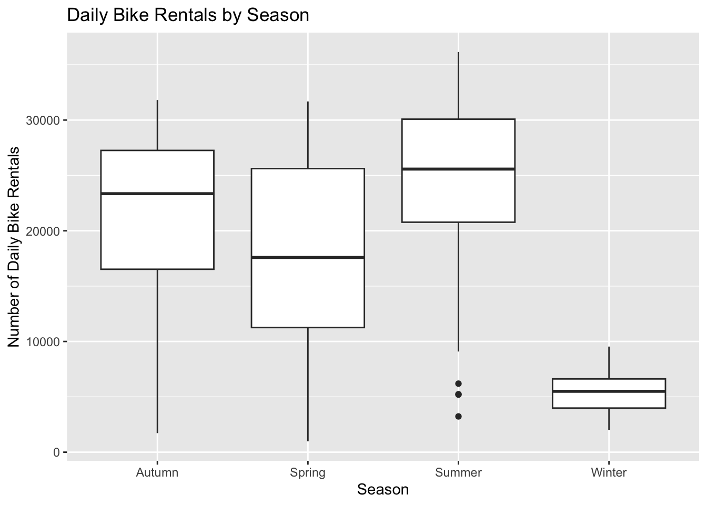
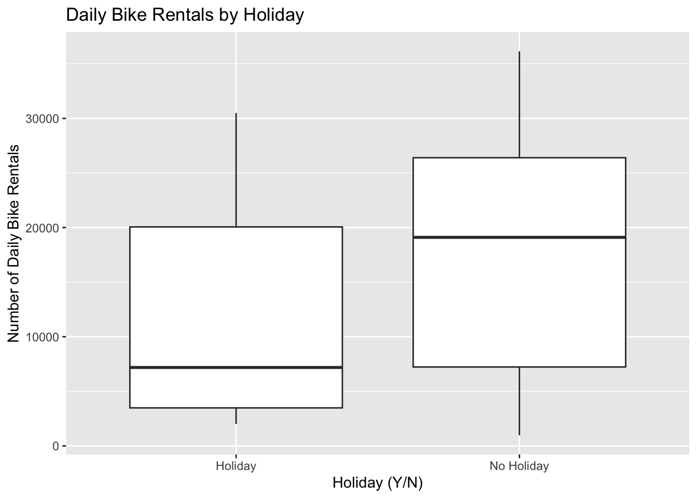
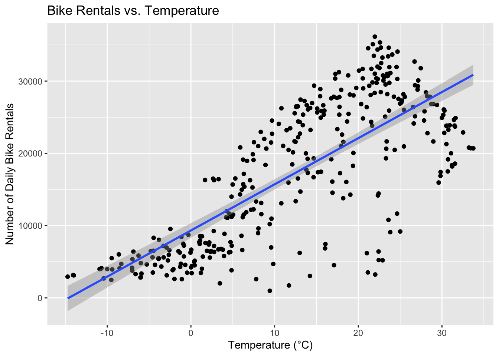
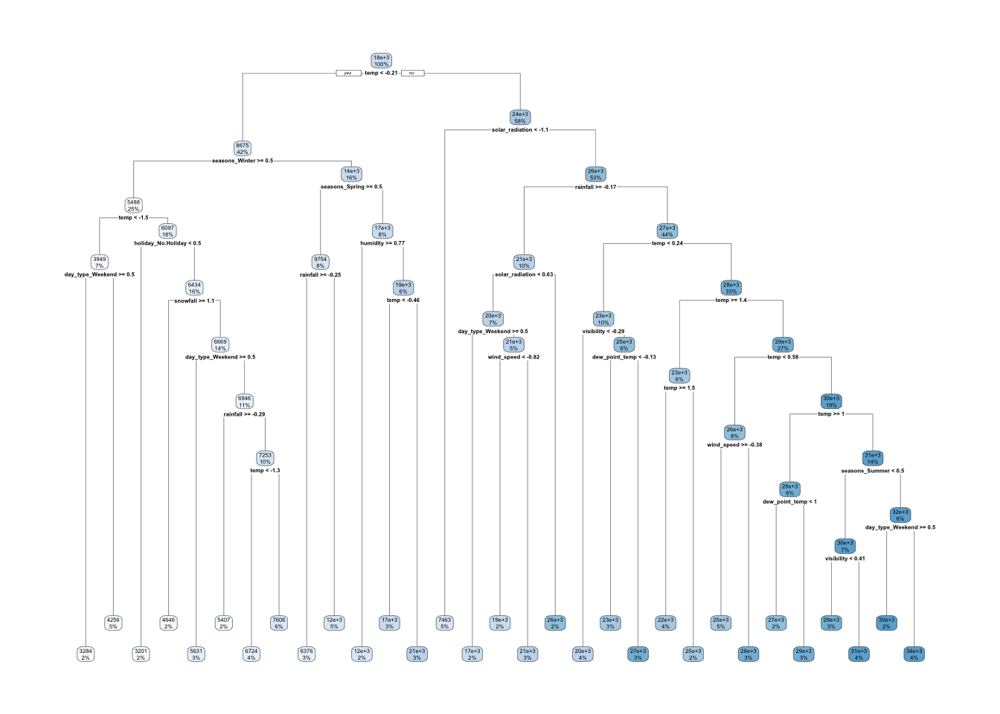
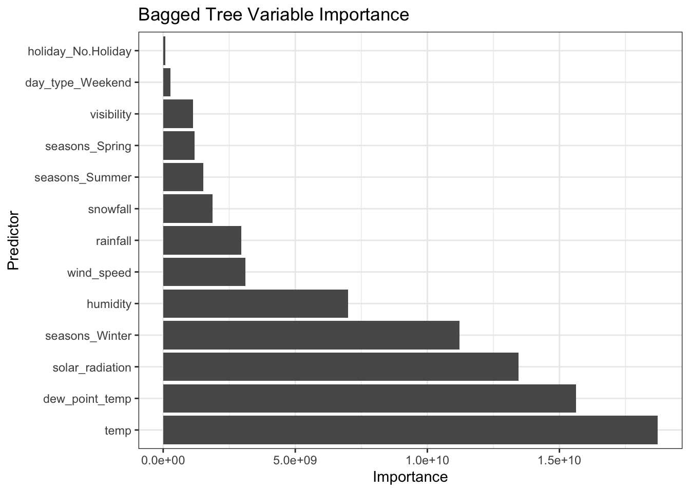
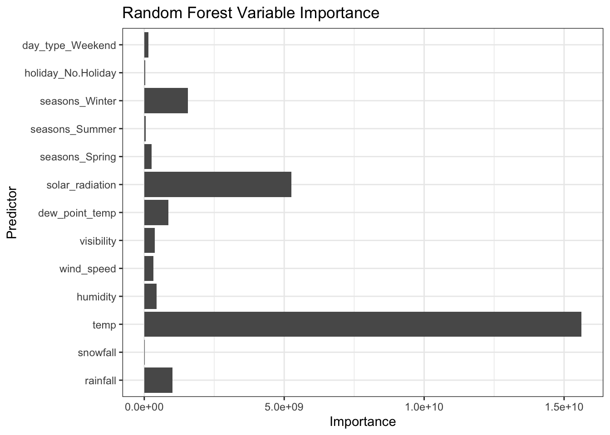

# load packages
library(tidyverse)
library(lubridate)
library(rsample)
# read in data
# use 'Latin1' for locale
bike_data <- read_csv("data/SeoulBikeData.csv", locale = locale(encoding = "Latin1"))HW10 - Modeling Practice
Homework 9
Introduction
Reading in the Data
Checking the Data (EDA)
# check for any missing values (#1)
colSums(is.na(bike_data)) Date Rented Bike Count Hour
0 0 0
Temperature(°C) Humidity(%) Wind speed (m/s)
0 0 0
Visibility (10m) Dew point temperature(°C) Solar Radiation (MJ/m2)
0 0 0
Rainfall(mm) Snowfall (cm) Seasons
0 0 0
Holiday Functioning Day
0 0 # check structure (#2) ; (can also use 'glimpse' which has a nicer output)
str(bike_data)spc_tbl_ [8,760 × 14] (S3: spec_tbl_df/tbl_df/tbl/data.frame)
$ Date : chr [1:8760] "01/12/2017" "01/12/2017" "01/12/2017" "01/12/2017" ...
$ Rented Bike Count : num [1:8760] 254 204 173 107 78 100 181 460 930 490 ...
$ Hour : num [1:8760] 0 1 2 3 4 5 6 7 8 9 ...
$ Temperature(°C) : num [1:8760] -5.2 -5.5 -6 -6.2 -6 -6.4 -6.6 -7.4 -7.6 -6.5 ...
$ Humidity(%) : num [1:8760] 37 38 39 40 36 37 35 38 37 27 ...
$ Wind speed (m/s) : num [1:8760] 2.2 0.8 1 0.9 2.3 1.5 1.3 0.9 1.1 0.5 ...
$ Visibility (10m) : num [1:8760] 2000 2000 2000 2000 2000 ...
$ Dew point temperature(°C): num [1:8760] -17.6 -17.6 -17.7 -17.6 -18.6 -18.7 -19.5 -19.3 -19.8 -22.4 ...
$ Solar Radiation (MJ/m2) : num [1:8760] 0 0 0 0 0 0 0 0 0.01 0.23 ...
$ Rainfall(mm) : num [1:8760] 0 0 0 0 0 0 0 0 0 0 ...
$ Snowfall (cm) : num [1:8760] 0 0 0 0 0 0 0 0 0 0 ...
$ Seasons : chr [1:8760] "Winter" "Winter" "Winter" "Winter" ...
$ Holiday : chr [1:8760] "No Holiday" "No Holiday" "No Holiday" "No Holiday" ...
$ Functioning Day : chr [1:8760] "Yes" "Yes" "Yes" "Yes" ...
- attr(*, "spec")=
.. cols(
.. Date = col_character(),
.. `Rented Bike Count` = col_double(),
.. Hour = col_double(),
.. `Temperature(°C)` = col_double(),
.. `Humidity(%)` = col_double(),
.. `Wind speed (m/s)` = col_double(),
.. `Visibility (10m)` = col_double(),
.. `Dew point temperature(°C)` = col_double(),
.. `Solar Radiation (MJ/m2)` = col_double(),
.. `Rainfall(mm)` = col_double(),
.. `Snowfall (cm)` = col_double(),
.. Seasons = col_character(),
.. Holiday = col_character(),
.. `Functioning Day` = col_character()
.. )
- attr(*, "problems")=<pointer: 0x120fc42a0> glimpse(bike_data)Rows: 8,760
Columns: 14
$ Date <chr> "01/12/2017", "01/12/2017", "01/12/2017", …
$ `Rented Bike Count` <dbl> 254, 204, 173, 107, 78, 100, 181, 460, 930…
$ Hour <dbl> 0, 1, 2, 3, 4, 5, 6, 7, 8, 9, 10, 11, 12, …
$ `Temperature(°C)` <dbl> -5.2, -5.5, -6.0, -6.2, -6.0, -6.4, -6.6, …
$ `Humidity(%)` <dbl> 37, 38, 39, 40, 36, 37, 35, 38, 37, 27, 24…
$ `Wind speed (m/s)` <dbl> 2.2, 0.8, 1.0, 0.9, 2.3, 1.5, 1.3, 0.9, 1.…
$ `Visibility (10m)` <dbl> 2000, 2000, 2000, 2000, 2000, 2000, 2000, …
$ `Dew point temperature(°C)` <dbl> -17.6, -17.6, -17.7, -17.6, -18.6, -18.7, …
$ `Solar Radiation (MJ/m2)` <dbl> 0.00, 0.00, 0.00, 0.00, 0.00, 0.00, 0.00, …
$ `Rainfall(mm)` <dbl> 0, 0, 0, 0, 0, 0, 0, 0, 0, 0, 0, 0, 0, 0, …
$ `Snowfall (cm)` <dbl> 0, 0, 0, 0, 0, 0, 0, 0, 0, 0, 0, 0, 0, 0, …
$ Seasons <chr> "Winter", "Winter", "Winter", "Winter", "W…
$ Holiday <chr> "No Holiday", "No Holiday", "No Holiday", …
$ `Functioning Day` <chr> "Yes", "Yes", "Yes", "Yes", "Yes", "Yes", …# convert 'Date' column from chr into actual dates (day/month/year) & confirm change (#3)
bike_data$Date <- dmy(trimws(bike_data$Date))
glimpse(bike_data)Rows: 8,760
Columns: 14
$ Date <date> 2017-12-01, 2017-12-01, 2017-12-01, 2017-…
$ `Rented Bike Count` <dbl> 254, 204, 173, 107, 78, 100, 181, 460, 930…
$ Hour <dbl> 0, 1, 2, 3, 4, 5, 6, 7, 8, 9, 10, 11, 12, …
$ `Temperature(°C)` <dbl> -5.2, -5.5, -6.0, -6.2, -6.0, -6.4, -6.6, …
$ `Humidity(%)` <dbl> 37, 38, 39, 40, 36, 37, 35, 38, 37, 27, 24…
$ `Wind speed (m/s)` <dbl> 2.2, 0.8, 1.0, 0.9, 2.3, 1.5, 1.3, 0.9, 1.…
$ `Visibility (10m)` <dbl> 2000, 2000, 2000, 2000, 2000, 2000, 2000, …
$ `Dew point temperature(°C)` <dbl> -17.6, -17.6, -17.7, -17.6, -18.6, -18.7, …
$ `Solar Radiation (MJ/m2)` <dbl> 0.00, 0.00, 0.00, 0.00, 0.00, 0.00, 0.00, …
$ `Rainfall(mm)` <dbl> 0, 0, 0, 0, 0, 0, 0, 0, 0, 0, 0, 0, 0, 0, …
$ `Snowfall (cm)` <dbl> 0, 0, 0, 0, 0, 0, 0, 0, 0, 0, 0, 0, 0, 0, …
$ Seasons <chr> "Winter", "Winter", "Winter", "Winter", "W…
$ Holiday <chr> "No Holiday", "No Holiday", "No Holiday", …
$ `Functioning Day` <chr> "Yes", "Yes", "Yes", "Yes", "Yes", "Yes", …# take a look at data itself
head(bike_data)# A tibble: 6 × 14
Date `Rented Bike Count` Hour `Temperature(°C)` `Humidity(%)`
<date> <dbl> <dbl> <dbl> <dbl>
1 2017-12-01 254 0 -5.2 37
2 2017-12-01 204 1 -5.5 38
3 2017-12-01 173 2 -6 39
4 2017-12-01 107 3 -6.2 40
5 2017-12-01 78 4 -6 36
6 2017-12-01 100 5 -6.4 37
# ℹ 9 more variables: `Wind speed (m/s)` <dbl>, `Visibility (10m)` <dbl>,
# `Dew point temperature(°C)` <dbl>, `Solar Radiation (MJ/m2)` <dbl>,
# `Rainfall(mm)` <dbl>, `Snowfall (cm)` <dbl>, Seasons <chr>, Holiday <chr>,
# `Functioning Day` <chr># do summary stats for numeric columns (#2)
summary(bike_data) Date Rented Bike Count Hour Temperature(°C)
Min. :2017-12-01 Min. : 0.0 Min. : 0.00 Min. :-17.80
1st Qu.:2018-03-02 1st Qu.: 191.0 1st Qu.: 5.75 1st Qu.: 3.50
Median :2018-06-01 Median : 504.5 Median :11.50 Median : 13.70
Mean :2018-06-01 Mean : 704.6 Mean :11.50 Mean : 12.88
3rd Qu.:2018-08-31 3rd Qu.:1065.2 3rd Qu.:17.25 3rd Qu.: 22.50
Max. :2018-11-30 Max. :3556.0 Max. :23.00 Max. : 39.40
Humidity(%) Wind speed (m/s) Visibility (10m) Dew point temperature(°C)
Min. : 0.00 Min. :0.000 Min. : 27 Min. :-30.600
1st Qu.:42.00 1st Qu.:0.900 1st Qu.: 940 1st Qu.: -4.700
Median :57.00 Median :1.500 Median :1698 Median : 5.100
Mean :58.23 Mean :1.725 Mean :1437 Mean : 4.074
3rd Qu.:74.00 3rd Qu.:2.300 3rd Qu.:2000 3rd Qu.: 14.800
Max. :98.00 Max. :7.400 Max. :2000 Max. : 27.200
Solar Radiation (MJ/m2) Rainfall(mm) Snowfall (cm) Seasons
Min. :0.0000 Min. : 0.0000 Min. :0.00000 Length :8760
1st Qu.:0.0000 1st Qu.: 0.0000 1st Qu.:0.00000 N.unique : 4
Median :0.0100 Median : 0.0000 Median :0.00000 N.blank : 0
Mean :0.5691 Mean : 0.1487 Mean :0.07507 Min.nchar: 6
3rd Qu.:0.9300 3rd Qu.: 0.0000 3rd Qu.:0.00000 Max.nchar: 6
Max. :3.5200 Max. :35.0000 Max. :8.80000
Holiday Functioning Day
Length :8760 Length :8760
N.unique : 2 N.unique : 2
N.blank : 0 N.blank : 0
Min.nchar: 7 Min.nchar: 2
Max.nchar: 10 Max.nchar: 3
# check unique values for categorical variables (#2)
unique(bike_data$Seasons)[1] "Winter" "Spring" "Summer" "Autumn"unique(bike_data$Holiday)[1] "No Holiday" "Holiday" unique(bike_data$`Functioning Day`)[1] "Yes" "No" # turn character variables into factors (Seasons, Holiday, Functioning Day) and check levels (#4)
bike_data$Seasons <- factor(bike_data$Seasons)
levels(bike_data$Seasons)[1] "Autumn" "Spring" "Summer" "Winter"bike_data$Holiday <- factor(bike_data$Holiday)
levels(bike_data$Holiday)[1] "Holiday" "No Holiday"bike_data$`Functioning Day` <- factor(bike_data$`Functioning Day`)
levels(bike_data$`Functioning Day`)[1] "No" "Yes"# double check to make sure structure looks good, specifically for date and factors w/ levels
str(bike_data)spc_tbl_ [8,760 × 14] (S3: spec_tbl_df/tbl_df/tbl/data.frame)
$ Date : Date[1:8760], format: "2017-12-01" "2017-12-01" ...
$ Rented Bike Count : num [1:8760] 254 204 173 107 78 100 181 460 930 490 ...
$ Hour : num [1:8760] 0 1 2 3 4 5 6 7 8 9 ...
$ Temperature(°C) : num [1:8760] -5.2 -5.5 -6 -6.2 -6 -6.4 -6.6 -7.4 -7.6 -6.5 ...
$ Humidity(%) : num [1:8760] 37 38 39 40 36 37 35 38 37 27 ...
$ Wind speed (m/s) : num [1:8760] 2.2 0.8 1 0.9 2.3 1.5 1.3 0.9 1.1 0.5 ...
$ Visibility (10m) : num [1:8760] 2000 2000 2000 2000 2000 ...
$ Dew point temperature(°C): num [1:8760] -17.6 -17.6 -17.7 -17.6 -18.6 -18.7 -19.5 -19.3 -19.8 -22.4 ...
$ Solar Radiation (MJ/m2) : num [1:8760] 0 0 0 0 0 0 0 0 0.01 0.23 ...
$ Rainfall(mm) : num [1:8760] 0 0 0 0 0 0 0 0 0 0 ...
$ Snowfall (cm) : num [1:8760] 0 0 0 0 0 0 0 0 0 0 ...
$ Seasons : Factor w/ 4 levels "Autumn","Spring",..: 4 4 4 4 4 4 4 4 4 4 ...
$ Holiday : Factor w/ 2 levels "Holiday","No Holiday": 2 2 2 2 2 2 2 2 2 2 ...
$ Functioning Day : Factor w/ 2 levels "No","Yes": 2 2 2 2 2 2 2 2 2 2 ...
- attr(*, "spec")=
.. cols(
.. Date = col_character(),
.. `Rented Bike Count` = col_double(),
.. Hour = col_double(),
.. `Temperature(°C)` = col_double(),
.. `Humidity(%)` = col_double(),
.. `Wind speed (m/s)` = col_double(),
.. `Visibility (10m)` = col_double(),
.. `Dew point temperature(°C)` = col_double(),
.. `Solar Radiation (MJ/m2)` = col_double(),
.. `Rainfall(mm)` = col_double(),
.. `Snowfall (cm)` = col_double(),
.. Seasons = col_character(),
.. Holiday = col_character(),
.. `Functioning Day` = col_character()
.. )
- attr(*, "problems")=<pointer: 0x120fc42a0> # rename all variables for easier use & confirm change (#5)
names(bike_data) [1] "Date" "Rented Bike Count"
[3] "Hour" "Temperature(°C)"
[5] "Humidity(%)" "Wind speed (m/s)"
[7] "Visibility (10m)" "Dew point temperature(°C)"
[9] "Solar Radiation (MJ/m2)" "Rainfall(mm)"
[11] "Snowfall (cm)" "Seasons"
[13] "Holiday" "Functioning Day" bike_data <- bike_data |>
rename(
date = Date,
bike_count = `Rented Bike Count`,
hour = Hour,
temp = `Temperature(°C)`,
humidity = `Humidity(%)`,
wind_speed = `Wind speed (m/s)`,
visibility = `Visibility (10m)`,
dew_point_temp = `Dew point temperature(°C)`,
solar_radiation = `Solar Radiation (MJ/m2)`,
rainfall = `Rainfall(mm)`,
snowfall = `Snowfall (cm)`,
seasons = Seasons,
holiday = Holiday,
functioning_day = `Functioning Day`
)
names(bike_data) [1] "date" "bike_count" "hour" "temp"
[5] "humidity" "wind_speed" "visibility" "dew_point_temp"
[9] "solar_radiation" "rainfall" "snowfall" "seasons"
[13] "holiday" "functioning_day"# create summary statistics for numeric variables (#6)
bike_data |>
select(
where(is.numeric)
) |>
summary() bike_count hour temp humidity
Min. : 0.0 Min. : 0.00 Min. :-17.80 Min. : 0.00
1st Qu.: 191.0 1st Qu.: 5.75 1st Qu.: 3.50 1st Qu.:42.00
Median : 504.5 Median :11.50 Median : 13.70 Median :57.00
Mean : 704.6 Mean :11.50 Mean : 12.88 Mean :58.23
3rd Qu.:1065.2 3rd Qu.:17.25 3rd Qu.: 22.50 3rd Qu.:74.00
Max. :3556.0 Max. :23.00 Max. : 39.40 Max. :98.00
wind_speed visibility dew_point_temp solar_radiation
Min. :0.000 Min. : 27 Min. :-30.600 Min. :0.0000
1st Qu.:0.900 1st Qu.: 940 1st Qu.: -4.700 1st Qu.:0.0000
Median :1.500 Median :1698 Median : 5.100 Median :0.0100
Mean :1.725 Mean :1437 Mean : 4.074 Mean :0.5691
3rd Qu.:2.300 3rd Qu.:2000 3rd Qu.: 14.800 3rd Qu.:0.9300
Max. :7.400 Max. :2000 Max. : 27.200 Max. :3.5200
rainfall snowfall
Min. : 0.0000 Min. :0.00000
1st Qu.: 0.0000 1st Qu.:0.00000
Median : 0.0000 Median :0.00000
Mean : 0.1487 Mean :0.07507
3rd Qu.: 0.0000 3rd Qu.:0.00000
Max. :35.0000 Max. :8.80000 # create summary statistics for categorical variables using bike rental count (#6)
# by season
bike_data |>
group_by(seasons) |>
summarise(
mean_rentals = mean(bike_count),
median_rentals = median(bike_count),
sd_rentals = sd(bike_count),
total_rentals = sum(bike_count),
min_rentals = min(bike_count),
max_rentals = max(bike_count),
count = n()
)# A tibble: 4 × 8
seasons mean_rentals median_rentals sd_rentals total_rentals min_rentals
<fct> <dbl> <dbl> <dbl> <dbl> <dbl>
1 Autumn 820. 764. 651. 1790002 0
2 Spring 730. 583 622. 1611909 0
3 Summer 1034. 906. 690. 2283234 9
4 Winter 226. 203 150. 487169 3
# ℹ 2 more variables: max_rentals <dbl>, count <int># by holiday
bike_data |>
group_by(holiday) |>
summarise(
mean_rentals = mean(bike_count),
median_rentals = median(bike_count),
sd_rentals = sd(bike_count),
total_rentals = sum(bike_count),
min_rentals = min(bike_count),
max_rentals = max(bike_count),
count = n()
)# A tibble: 2 × 8
holiday mean_rentals median_rentals sd_rentals total_rentals min_rentals
<fct> <dbl> <dbl> <dbl> <dbl> <dbl>
1 Holiday 500. 240 571. 215895 0
2 No Holiday 715. 524. 647. 5956419 0
# ℹ 2 more variables: max_rentals <dbl>, count <int># by functioning day
bike_data |>
group_by(functioning_day) |>
summarise(
mean_rentals = mean(bike_count),
median_rentals = median(bike_count),
sd_rentals = sd(bike_count),
total_rentals = sum(bike_count),
min_rentals = min(bike_count),
max_rentals = max(bike_count),
count = n()
)# A tibble: 2 × 8
functioning_day mean_rentals median_rentals sd_rentals total_rentals
<fct> <dbl> <dbl> <dbl> <dbl>
1 No 0 0 0 0
2 Yes 729. 542 642. 6172314
# ℹ 3 more variables: min_rentals <dbl>, max_rentals <dbl>, count <int># exclude non-functioning observations since rentals won't happen on those days (#6)
bike_data <- bike_data |>
filter(functioning_day == "Yes")
# summarize across hours so each day has one observation (#7)
daily_bike <- bike_data |>
# group by date, seasons, and holiday
group_by(date, seasons, holiday) |>
# find sum of bike_count, rainfall, & snowfall
summarise(
bike_count = sum(bike_count),
rainfall = sum(rainfall),
snowfall = sum(snowfall),
# find mean of other weather-related variables
temp = mean(temp),
humidity = mean(humidity),
wind_speed = mean(wind_speed),
visibility = mean(visibility),
dew_point_temp = mean(dew_point_temp),
solar_radiation = mean(solar_radiation),
.groups = "drop" # removes grouping
)
# check new dataset
glimpse(daily_bike)Rows: 353
Columns: 12
$ date <date> 2017-12-01, 2017-12-02, 2017-12-03, 2017-12-04, 2017-…
$ seasons <fct> Winter, Winter, Winter, Winter, Winter, Winter, Winter…
$ holiday <fct> No Holiday, No Holiday, No Holiday, No Holiday, No Hol…
$ bike_count <dbl> 9539, 8523, 7222, 8729, 8307, 6669, 8549, 8032, 7233, …
$ rainfall <dbl> 0.0, 0.0, 4.0, 0.1, 0.0, 1.3, 0.0, 0.0, 0.0, 4.1, 0.0,…
$ snowfall <dbl> 0.0, 0.0, 0.0, 0.0, 0.0, 8.6, 10.4, 0.0, 0.0, 32.5, 0.…
$ temp <dbl> -2.45416667, 1.32500000, 4.87500000, -0.30416667, -4.4…
$ humidity <dbl> 45.87500, 61.95833, 81.54167, 52.50000, 36.41667, 70.7…
$ wind_speed <dbl> 1.5375000, 1.7125000, 1.6125000, 3.4500000, 1.1083333,…
$ visibility <dbl> 1870.7500, 1471.0833, 455.7500, 1362.8333, 1959.4583, …
$ dew_point_temp <dbl> -13.5458333, -5.7166667, 1.8833333, -9.9250000, -17.42…
$ solar_radiation <dbl> 0.24875000, 0.26375000, 0.12541667, 0.28291667, 0.0358…# recreate basic summary stats (#8)
# numeric variables
daily_bike |>
select(
where(is.numeric)
) |>
summary() bike_count rainfall snowfall temp
Min. : 977 Min. : 0.000 Min. : 0.000 Min. :-14.738
1st Qu.: 6967 1st Qu.: 0.000 1st Qu.: 0.000 1st Qu.: 3.304
Median :18563 Median : 0.000 Median : 0.000 Median : 13.738
Mean :17485 Mean : 3.576 Mean : 1.863 Mean : 12.776
3rd Qu.:26285 3rd Qu.: 0.500 3rd Qu.: 0.000 3rd Qu.: 22.592
Max. :36149 Max. :95.500 Max. :78.700 Max. : 33.742
humidity wind_speed visibility dew_point_temp
Min. :22.25 Min. :0.6625 Min. : 214.3 Min. :-27.750
1st Qu.:47.58 1st Qu.:1.3042 1st Qu.:1087.0 1st Qu.: -5.188
Median :57.17 Median :1.6583 Median :1557.8 Median : 4.612
Mean :58.17 Mean :1.7261 Mean :1434.0 Mean : 3.954
3rd Qu.:67.71 3rd Qu.:1.9542 3rd Qu.:1874.3 3rd Qu.: 14.921
Max. :95.88 Max. :4.0000 Max. :2000.0 Max. : 25.038
solar_radiation
Min. :0.02917
1st Qu.:0.28333
Median :0.56500
Mean :0.56773
3rd Qu.:0.82000
Max. :1.21667 # categorical variables
# by season
daily_bike |>
group_by(seasons) |>
summarise(
mean_rentals = mean(bike_count),
median_rentals = median(bike_count),
sd_rentals = sd(bike_count),
total_rentals = sum(bike_count),
min_rentals = min(bike_count),
max_rentals = max(bike_count),
count = n()
)# A tibble: 4 × 8
seasons mean_rentals median_rentals sd_rentals total_rentals min_rentals
<fct> <dbl> <dbl> <dbl> <dbl> <dbl>
1 Autumn 22099. 23350 6711. 1790002 1721
2 Spring 17910. 17590 8357. 1611909 977
3 Summer 24818. 25572. 7297. 2283234 3231
4 Winter 5413. 5498 1808. 487169 2014
# ℹ 2 more variables: max_rentals <dbl>, count <int># by holiday
daily_bike |>
group_by(holiday) |>
summarise(
mean_rentals = mean(bike_count),
median_rentals = median(bike_count),
sd_rentals = sd(bike_count),
total_rentals = sum(bike_count),
min_rentals = min(bike_count),
max_rentals = max(bike_count),
count = n()
)# A tibble: 2 × 8
holiday mean_rentals median_rentals sd_rentals total_rentals min_rentals
<fct> <dbl> <dbl> <dbl> <dbl> <dbl>
1 Holiday 12700. 7184 10504. 215895 2014
2 No Holiday 17727. 19104. 9862. 5956419 977
# ℹ 2 more variables: max_rentals <dbl>, count <int># create plots to explore relationships (#8)
# boxplot: compare daily bike rentals across seasons
ggplot(
daily_bike,
aes(
x = seasons,
y = bike_count
)) +
geom_boxplot() +
labs(
title = "Daily Bike Rentals by Season",
x = "Season",
y = "Number of Daily Bike Rentals"
) +
theme_grey()
# boxplot: compare daily bike rentals across holidays and non-holidays
ggplot(
daily_bike,
aes(
x = holiday,
y = bike_count
)) +
geom_boxplot() +
labs(
title = "Daily Bike Rentals by Holiday",
x = "Holiday (Y/N)",
y = "Number of Daily Bike Rentals"
) +
theme_grey()
# scatterplot: compare daily bike rentals across temperature
ggplot(
daily_bike,
aes(
x = temp,
y = bike_count
)) +
geom_point() +
geom_smooth(
method = "lm"
) +
labs(
title = "Bike Rentals vs. Temperature",
x = "Temperature (°C)",
y = "Number of Daily Bike Rentals"
) +
theme_grey()
# report correlation between numeric variables (#8)
daily_bike |>
select(where(is.numeric)) |>
cor(use = "complete.obs") |>
round(2) |>
as.data.frame() |> # nicer to look at than a matrix, to me personally
rownames_to_column(var = "Variable") Variable bike_count rainfall snowfall temp humidity wind_speed
1 bike_count 1.00 -0.24 -0.27 0.75 0.04 -0.19
2 rainfall -0.24 1.00 -0.02 0.14 0.53 -0.10
3 snowfall -0.27 -0.02 1.00 -0.27 0.07 0.02
4 temp 0.75 0.14 -0.27 1.00 0.40 -0.26
5 humidity 0.04 0.53 0.07 0.40 1.00 -0.23
6 wind_speed -0.19 -0.10 0.02 -0.26 -0.23 1.00
7 visibility 0.17 -0.22 -0.10 0.00 -0.56 0.21
8 dew_point_temp 0.65 0.26 -0.21 0.96 0.63 -0.29
9 solar_radiation 0.74 -0.32 -0.23 0.55 -0.27 0.10
visibility dew_point_temp solar_radiation
1 0.17 0.65 0.74
2 -0.22 0.26 -0.32
3 -0.10 -0.21 -0.23
4 0.00 0.96 0.55
5 -0.56 0.63 -0.27
6 0.21 -0.29 0.10
7 1.00 -0.15 0.27
8 -0.15 1.00 0.38
9 0.27 0.38 1.00Splitting the Data (1st)
# set seed for reproduction
set.seed(13)
# split data into training and test set (75/25 split) & use 'strata' to stratify the split on 'seasons'
split_bike <- initial_split(
daily_bike,
prop = 0.75,
strata = seasons
)
train_bike <- training(split_bike)
test_bike <- testing(split_bike)
# check number of observations for 75/25 split
nrow(train_bike)[1] 263nrow(test_bike)[1] 90Fitting a MLR Model (1st)
# create weekday/weekend variable in training data
train_bike <- train_bike |>
mutate(
day_type = factor(
if_else(
wday(
date,
week_start = 1
) %in% c(6, 7),
"Weekend",
"Weekday"
),
levels = c("Weekday", "Weekend")
)
)
# create weekday/weekend variable in testing data
test_bike <- test_bike |>
mutate(
day_type = factor(
if_else(
wday(
date,
week_start = 1
) %in% c(6, 7),
"Weekend",
"Weekday"
),
levels = c("Weekday", "Weekend")
)
)
# check for new variable
str(train_bike)tibble [263 × 13] (S3: tbl_df/tbl/data.frame)
$ date : Date[1:263], format: "2018-09-01" "2018-09-02" ...
$ seasons : Factor w/ 4 levels "Autumn","Spring",..: 1 1 1 1 1 1 1 1 1 1 ...
$ holiday : Factor w/ 2 levels "Holiday","No Holiday": 2 2 2 2 2 2 2 2 2 2 ...
$ bike_count : num [1:263] 26010 26881 10802 29529 31114 ...
$ rainfall : num [1:263] 0 0 34.5 0 0 0 1.5 0 0 0 ...
$ snowfall : num [1:263] 0 0 0 0 0 0 0 0 0 0 ...
$ temp : num [1:263] 25.5 25 23.6 23.3 23.8 ...
$ humidity : num [1:263] 61.2 54.5 82.2 71.6 61.8 ...
$ wind_speed : num [1:263] 1.21 1.5 1.06 2.17 2.5 ...
$ visibility : num [1:263] 1839 1994 1504 1455 1954 ...
$ dew_point_temp : num [1:263] 16.7 14.9 20.2 17.1 15.4 ...
$ solar_radiation: num [1:263] 0.875 0.848 0.14 0.902 0.936 ...
$ day_type : Factor w/ 2 levels "Weekday","Weekend": 2 2 1 1 1 1 1 2 2 1 ...str(test_bike)tibble [90 × 13] (S3: tbl_df/tbl/data.frame)
$ date : Date[1:90], format: "2017-12-04" "2017-12-06" ...
$ seasons : Factor w/ 4 levels "Autumn","Spring",..: 4 4 4 4 4 4 4 4 4 4 ...
$ holiday : Factor w/ 2 levels "Holiday","No Holiday": 2 2 2 2 1 2 2 2 2 2 ...
$ bike_count : num [1:90] 8729 6669 8032 4568 2014 ...
$ rainfall : num [1:90] 0.1 1.3 0 0.2 20 0 0.8 0.2 0 0 ...
$ snowfall : num [1:90] 0 8.6 0 48.3 0 0 10.2 0 0 0 ...
$ temp : num [1:90] -0.3042 0.0458 -3.825 -4.2917 3.4583 ...
$ humidity : num [1:90] 52.5 70.8 41.8 65.5 82.8 ...
$ wind_speed : num [1:90] 3.45 0.696 1.85 1.113 1.825 ...
$ visibility : num [1:90] 1363 1187 1872 1405 359 ...
$ dew_point_temp : num [1:90] -9.925 -5.188 -15.367 -10.004 0.708 ...
$ solar_radiation: num [1:90] 0.2829 0.2558 0.2871 0.14 0.0292 ...
$ day_type : Factor w/ 2 levels "Weekday","Weekend": 1 1 1 1 2 1 1 1 1 2 ...table(train_bike$day_type)
Weekday Weekend
185 78 table(test_bike$day_type)
Weekday Weekend
66 24 # create standardized versions of numeric variables
num_vars <- c(
"temp", "humidity", "wind_speed", "visibility",
"dew_point_temp", "solar_radiation", "rainfall", "snowfall"
)
# calculate means using training data
train_means <- sapply(train_bike[num_vars], mean)
# calculate standard deviations using training data
train_sds <- sapply(train_bike[num_vars], sd)
# check
train_means temp humidity wind_speed visibility dew_point_temp
12.6055059 57.8023839 1.7376948 1443.8738444 3.7027706
solar_radiation rainfall snowfall
0.5607248 3.1961977 1.9992395 train_sds temp humidity wind_speed visibility dew_point_temp
11.9549857 14.8565401 0.5852991 485.2635473 13.2755482
solar_radiation rainfall snowfall
0.3191207 10.4980871 9.3065519 # standardize training data using the training means and sds
train_bike <- train_bike |>
mutate(
across(
all_of(num_vars),
~ (.x - train_means[[cur_column()]]) / train_sds[[cur_column()]]
)
)
# standardize testing data using the training means and sds
test_bike <- test_bike |>
mutate(
across(
all_of(num_vars),
~ (.x - train_means[[cur_column()]]) / train_sds[[cur_column()]]
)
)
# fit a model with all the standardized numeric variables included along with the seasons, holiday, and weekend/weekday variables
model1 <- lm(
bike_count ~
temp +
humidity +
wind_speed +
visibility +
dew_point_temp +
solar_radiation +
rainfall +
snowfall +
seasons +
holiday +
day_type,
data = train_bike
)
summary(model1)
Call:
lm(formula = bike_count ~ temp + humidity + wind_speed + visibility +
dew_point_temp + solar_radiation + rainfall + snowfall +
seasons + holiday + day_type, data = train_bike)
Residuals:
Min 1Q Median 3Q Max
-9442.7 -2458.2 -98.4 2439.2 11946.9
Coefficients:
Estimate Std. Error t value Pr(>|t|)
(Intercept) 18838.1 1211.9 15.544 < 2e-16 ***
temp -6094.0 4823.3 -1.263 0.20761
humidity -3575.5 1816.6 -1.968 0.05015 .
wind_speed -802.8 291.1 -2.757 0.00626 **
visibility -584.9 367.0 -1.594 0.11223
dew_point_temp 11649.4 5703.3 2.043 0.04215 *
solar_radiation 4255.3 465.7 9.138 < 2e-16 ***
rainfall -1850.0 331.7 -5.577 6.37e-08 ***
snowfall -249.8 275.6 -0.906 0.36562
seasonsSpring -5116.0 817.0 -6.262 1.65e-09 ***
seasonsSummer -3945.8 983.8 -4.011 8.00e-05 ***
seasonsWinter -8064.3 1121.1 -7.193 7.40e-12 ***
holidayNo Holiday 3767.4 1143.6 3.294 0.00113 **
day_typeWeekend -2476.7 561.4 -4.411 1.53e-05 ***
---
Signif. codes: 0 '***' 0.001 '**' 0.01 '*' 0.05 '.' 0.1 ' ' 1
Residual standard error: 4069 on 249 degrees of freedom
Multiple R-squared: 0.8428, Adjusted R-squared: 0.8345
F-statistic: 102.7 on 13 and 249 DF, p-value: < 2.2e-16# fit a model with all the terms in the first model but also interactions between seasons and holiday, seasons and temp, and temp and rainfall
model2 <- lm(
bike_count ~
temp +
humidity +
wind_speed +
visibility +
dew_point_temp +
solar_radiation +
rainfall +
snowfall +
seasons +
holiday +
day_type +
seasons:holiday +
seasons:temp +
temp:rainfall,
data = train_bike
)
summary(model2)
Call:
lm(formula = bike_count ~ temp + humidity + wind_speed + visibility +
dew_point_temp + solar_radiation + rainfall + snowfall +
seasons + holiday + day_type + seasons:holiday + seasons:temp +
temp:rainfall, data = train_bike)
Residuals:
Min 1Q Median 3Q Max
-18164.9 -1318.7 123.4 1531.9 7315.3
Coefficients:
Estimate Std. Error t value Pr(>|t|)
(Intercept) 17780.2 1694.5 10.493 < 2e-16 ***
temp -4393.2 3733.0 -1.177 0.24040
humidity -3789.9 1384.4 -2.738 0.00665 **
wind_speed -547.2 210.9 -2.594 0.01006 *
visibility -181.9 281.5 -0.646 0.51870
dew_point_temp 11334.9 4320.9 2.623 0.00926 **
solar_radiation 3306.6 343.1 9.637 < 2e-16 ***
rainfall -2079.4 344.6 -6.035 5.92e-09 ***
snowfall -199.6 196.7 -1.014 0.31137
seasonsSpring -3426.4 2442.9 -1.403 0.16202
seasonsSummer 17845.6 3049.5 5.852 1.57e-08 ***
seasonsWinter -6834.2 2372.2 -2.881 0.00432 **
holidayNo Holiday 4693.3 1730.4 2.712 0.00716 **
day_typeWeekend -2640.4 396.0 -6.667 1.75e-10 ***
seasonsSpring:holidayNo Holiday -1135.7 2489.3 -0.456 0.64865
seasonsSummer:holidayNo Holiday -853.0 2682.0 -0.318 0.75073
seasonsWinter:holidayNo Holiday -1362.3 2126.2 -0.641 0.52231
temp:seasonsSpring 4930.9 1056.5 4.667 5.06e-06 ***
temp:seasonsSummer -18383.5 1416.7 -12.977 < 2e-16 ***
temp:seasonsWinter -1020.7 1296.6 -0.787 0.43192
temp:rainfall -1001.2 405.5 -2.469 0.01423 *
---
Signif. codes: 0 '***' 0.001 '**' 0.01 '*' 0.05 '.' 0.1 ' ' 1
Residual standard error: 2860 on 242 degrees of freedom
Multiple R-squared: 0.9245, Adjusted R-squared: 0.9182
F-statistic: 148.1 on 20 and 242 DF, p-value: < 2.2e-16# fit a model with all the terms in the second model and also squared terms for the temp and humidity variables (standardized versions)
# use I() to create the quadratic terms
model3 <- lm(
bike_count ~
temp +
humidity +
wind_speed +
visibility +
dew_point_temp +
solar_radiation +
rainfall +
snowfall +
seasons +
holiday +
day_type +
seasons:holiday +
seasons:temp +
temp:rainfall +
I(temp^2) +
I(humidity^2),
data = train_bike
)
summary(model3)
Call:
lm(formula = bike_count ~ temp + humidity + wind_speed + visibility +
dew_point_temp + solar_radiation + rainfall + snowfall +
seasons + holiday + day_type + seasons:holiday + seasons:temp +
temp:rainfall + I(temp^2) + I(humidity^2), data = train_bike)
Residuals:
Min 1Q Median 3Q Max
-18032 -1270 72 1467 8102
Coefficients:
Estimate Std. Error t value Pr(>|t|)
(Intercept) 18074.8 1689.9 10.696 < 2e-16 ***
temp 869.8 4499.9 0.193 0.84689
humidity -2154.5 1612.0 -1.337 0.18264
wind_speed -510.6 210.7 -2.423 0.01613 *
visibility -178.9 279.9 -0.639 0.52337
dew_point_temp 5404.1 5234.7 1.032 0.30295
solar_radiation 3072.6 358.8 8.565 1.33e-15 ***
rainfall -1890.2 355.3 -5.320 2.38e-07 ***
snowfall -253.5 200.4 -1.265 0.20717
seasonsSpring -2780.5 2468.0 -1.127 0.26103
seasonsSummer 17540.3 3266.4 5.370 1.86e-07 ***
seasonsWinter -8245.6 2860.5 -2.883 0.00430 **
holidayNo Holiday 4917.2 1736.5 2.832 0.00502 **
day_typeWeekend -2707.9 395.3 -6.849 6.18e-11 ***
I(temp^2) -490.3 868.6 -0.564 0.57298
I(humidity^2) -462.4 228.3 -2.025 0.04394 *
seasonsSpring:holidayNo Holiday -1737.4 2532.1 -0.686 0.49327
seasonsSummer:holidayNo Holiday -1044.9 2680.3 -0.390 0.69698
seasonsWinter:holidayNo Holiday -1660.6 2122.3 -0.782 0.43471
temp:seasonsSpring 4852.9 1125.6 4.312 2.37e-05 ***
temp:seasonsSummer -17543.8 2325.3 -7.545 9.36e-13 ***
temp:seasonsWinter -3242.7 2892.8 -1.121 0.26343
temp:rainfall -964.6 403.7 -2.390 0.01764 *
---
Signif. codes: 0 '***' 0.001 '**' 0.01 '*' 0.05 '.' 0.1 ' ' 1
Residual standard error: 2844 on 240 degrees of freedom
Multiple R-squared: 0.926, Adjusted R-squared: 0.9192
F-statistic: 136.4 on 22 and 240 DF, p-value: < 2.2e-16# predict daily bike rentals for each model using test data
pred1 <- predict(model1, newdata = test_bike)
pred2 <- predict(model2, newdata = test_bike)
pred3 <- predict(model3, newdata = test_bike)
# find test set RMSE for each model
rmse1 <- sqrt(mean((test_bike$bike_count - pred1)^2))
rmse2 <- sqrt(mean((test_bike$bike_count - pred2)^2))
rmse3 <- sqrt(mean((test_bike$bike_count - pred3)^2))
# compare RMSE values
rmse_results <- tibble(
Model = c("Model 1", "Model 2", "Model 3"),
RMSE = c(rmse1, rmse2, rmse3)
)
# display results (from lowest to highest RMSE) & determine which model minimizes this test set RMSE
rmse_results |>
arrange(RMSE)# A tibble: 3 × 2
Model RMSE
<chr> <dbl>
1 Model 3 3160.
2 Model 2 3210.
3 Model 1 4091.# model 3 has the lowest RMSE
# create weekday/weekend variable for the entire data set
full_bike <- daily_bike |>
mutate(
day_type = factor(
if_else(
wday(
date,
week_start = 1
) %in% c(6, 7),
"Weekend",
"Weekday"
),
levels = c("Weekday", "Weekend")
)
)
# check for new variable
str(full_bike)tibble [353 × 13] (S3: tbl_df/tbl/data.frame)
$ date : Date[1:353], format: "2017-12-01" "2017-12-02" ...
$ seasons : Factor w/ 4 levels "Autumn","Spring",..: 4 4 4 4 4 4 4 4 4 4 ...
$ holiday : Factor w/ 2 levels "Holiday","No Holiday": 2 2 2 2 2 2 2 2 2 2 ...
$ bike_count : num [1:353] 9539 8523 7222 8729 8307 ...
$ rainfall : num [1:353] 0 0 4 0.1 0 1.3 0 0 0 4.1 ...
$ snowfall : num [1:353] 0 0 0 0 0 8.6 10.4 0 0 32.5 ...
$ temp : num [1:353] -2.454 1.325 4.875 -0.304 -4.458 ...
$ humidity : num [1:353] 45.9 62 81.5 52.5 36.4 ...
$ wind_speed : num [1:353] 1.54 1.71 1.61 3.45 1.11 ...
$ visibility : num [1:353] 1871 1471 456 1363 1959 ...
$ dew_point_temp : num [1:353] -13.55 -5.72 1.88 -9.93 -17.43 ...
$ solar_radiation: num [1:353] 0.2488 0.2638 0.1254 0.2829 0.0358 ...
$ day_type : Factor w/ 2 levels "Weekday","Weekend": 1 2 2 1 1 1 1 1 2 2 ...table(full_bike$day_type)
Weekday Weekend
251 102 # calculate means and sds using the full dataset
full_means <- sapply(full_bike[num_vars], mean)
full_sds <- sapply(full_bike[num_vars], sd)
# check
full_means temp humidity wind_speed visibility dew_point_temp
12.7758443 58.1662709 1.7261484 1434.0136574 3.9541653
solar_radiation rainfall snowfall
0.5677319 3.5759207 1.8628895 full_sds temp humidity wind_speed visibility dew_point_temp
11.7183975 14.8655183 0.5972809 491.1560587 12.9929388
solar_radiation rainfall snowfall
0.3161252 11.7898677 8.8044126 # standardize numeric predictors using the full dataset
full_bike <- full_bike |>
mutate(
across(
all_of(num_vars),
~ (.x - full_means[[cur_column()]]) / full_sds[[cur_column()]]
)
)
# fit model 3 using full dataset
final_model <- lm(
bike_count ~
temp +
humidity +
wind_speed +
visibility +
dew_point_temp +
solar_radiation +
rainfall +
snowfall +
seasons +
holiday +
day_type +
seasons:holiday +
seasons:temp +
temp:rainfall +
I(temp^2) +
I(humidity^2),
data = train_bike
)Homework 10
library(tidymodels)Splitting the Data (2nd)
# set seed for reproduction
set.seed(18)
# split data into training and test sets (75/25) & use 'strata' to stratify the split on 'seasons'
split_bike <- initial_split(
daily_bike,
prop = 0.75,
strata = seasons
)
# create training & test datasets
train_bike <- training(split_bike)
test_bike <- testing(split_bike)
# check number of observations for 75/25 split
nrow(train_bike)[1] 263nrow(test_bike)[1] 90# create 10-fold cross-validation split using training data
set.seed(21)
bike_folds <- vfold_cv(
train_bike,
v = 10
)
# display
bike_folds# 10-fold cross-validation
# A tibble: 10 × 2
splits id
<list> <chr>
1 <split [236/27]> Fold01
2 <split [236/27]> Fold02
3 <split [236/27]> Fold03
4 <split [237/26]> Fold04
5 <split [237/26]> Fold05
6 <split [237/26]> Fold06
7 <split [237/26]> Fold07
8 <split [237/26]> Fold08
9 <split [237/26]> Fold09
10 <split [237/26]> Fold10Fitting the MLR Models (2nd)
Recipes tell R to perform certain preprocessing steps before fitting a model.
Recipe 1
# create the first recipe
bike_rec1 <- recipe(
bike_count ~ .,
data = train_bike
) |>
# extract day of the week from date
step_date(
date,
features = "dow"
) |>
# create weekday/weekend variable
step_mutate(
day_type = factor(
if_else(
date_dow %in% c("Sat", "Sun"),
"Weekend",
"Weekday"
)
)
) |>
# remove original date & intermediate date variable
step_rm(date, date_dow) |>
# standardize numeric predictors
step_normalize(all_numeric_predictors()) |>
# create dummy variables for categorical predictors
step_dummy(seasons, holiday, day_type)
bike_rec1Recipe 2
# create the second recipe
bike_rec2 <- recipe(
bike_count ~ .,
data = train_bike
) |>
step_date(
date,
features = "dow"
) |>
step_mutate(
day_type = factor(
if_else(
date_dow %in% c("Sat", "Sun"),
"Weekend",
"Weekday"
)
)
) |>
step_rm(date, date_dow) |>
step_normalize(all_numeric_predictors()) |>
step_dummy(seasons, holiday, day_type) |>
# create interaction terms
# `starts_with()` selects the new dummy variables with a common prefix
step_interact(
terms = ~
# interaction between seasons and holiday
starts_with("seasons_"):starts_with("holiday_") +
# interaction between seasons and temp
starts_with("seasons_"):temp +
# interaction between temp and rainfall
temp:rainfall
)
bike_rec2Recipe 3
# create the third recipe
bike_rec3 <- recipe(
bike_count ~ .,
data = train_bike
) |>
step_date(
date,
features = "dow"
) |>
step_mutate(
day_type = factor(
if_else(
date_dow %in% c("Sat", "Sun"),
"Weekend",
"Weekday"
)
)
) |>
step_rm(date, date_dow) |>
step_normalize(all_numeric_predictors()) |>
step_dummy(seasons, holiday, day_type) |>
step_interact(
terms = ~
starts_with("seasons_"):starts_with("holiday_") +
starts_with("seasons_"):temp +
temp:rainfall
) |>
# create (standardized) quadratic terms
step_mutate(
temp_squared = temp^2,
hum_squared = humidity^2
)
bike_rec3Fitting the 3 MLR Models
workflowsconnects each recipe with the lm model.
# specify the linear regression model
lm_model <- linear_reg() |>
set_engine("lm")
# create workflow for each models
bike_wkf1 <- workflow() |>
add_recipe(bike_rec1) |>
add_model(lm_model)
bike_wkf1══ Workflow ════════════════════════════════════════════════════════════════════
Preprocessor: Recipe
Model: linear_reg()
── Preprocessor ────────────────────────────────────────────────────────────────
5 Recipe Steps
• step_date()
• step_mutate()
• step_rm()
• step_normalize()
• step_dummy()
── Model ───────────────────────────────────────────────────────────────────────
Linear Regression Model Specification (regression)
Computational engine: lm bike_wkf2 <- workflow() |>
add_recipe(bike_rec2) |>
add_model(lm_model)
bike_wkf2══ Workflow ════════════════════════════════════════════════════════════════════
Preprocessor: Recipe
Model: linear_reg()
── Preprocessor ────────────────────────────────────────────────────────────────
6 Recipe Steps
• step_date()
• step_mutate()
• step_rm()
• step_normalize()
• step_dummy()
• step_interact()
── Model ───────────────────────────────────────────────────────────────────────
Linear Regression Model Specification (regression)
Computational engine: lm bike_wkf3 <- workflow() |>
add_recipe(bike_rec3) |>
add_model(lm_model)
bike_wkf3══ Workflow ════════════════════════════════════════════════════════════════════
Preprocessor: Recipe
Model: linear_reg()
── Preprocessor ────────────────────────────────────────────────────────────────
7 Recipe Steps
• step_date()
• step_mutate()
• step_rm()
• step_normalize()
• step_dummy()
• step_interact()
• step_mutate()
── Model ───────────────────────────────────────────────────────────────────────
Linear Regression Model Specification (regression)
Computational engine: lm fit_resamples()evaluates each workflow using the same 10 folds.
# fit model 1 using cross-validation
bike_fit1 <- bike_wkf1 |>
fit_resamples(bike_folds)
# fit model 2 using CV
bike_fit2 <- bike_wkf2 |>
fit_resamples(bike_folds)
# fit model 3 using CV
bike_fit3 <- bike_wkf3 |>
fit_resamples(bike_folds)Comparing the 3 MLR Models
# combine & collect CV RMSE results
rbind(
bike_fit1 |>
collect_metrics() |>
filter(.metric == "rmse"),
bike_fit2 |>
collect_metrics() |>
filter(.metric == "rmse"),
bike_fit3 |>
collect_metrics() |>
filter(.metric == "rmse")
) |>
mutate(
Model = c("Model 1", "Model 2", "Model 3")
) |>
select(Model, RMSE = mean, n, std_err) |>
arrange(RMSE)# A tibble: 3 × 4
Model RMSE n std_err
<chr> <dbl> <int> <dbl>
1 Model 2 3116. 10 278.
2 Model 3 3124. 10 289.
3 Model 1 4091. 10 281.Model 2 has lowest RMSE, so it is the best-performing MLR model (based on CV).
Fitting the Best MLR Model
last_fit()fits the model on the entire training data set & evaluates its performance on the test data set.
# fit the best model to the entire training data set
final_lm <- bike_wkf2 |>
last_fit(
split = split_bike,
metrics = metric_set(rmse,mae)
)
# examine test data set performance
final_lm |>
collect_metrics() |>
select(
.metric,
.estimator,
.estimate
)# A tibble: 2 × 3
.metric .estimator .estimate
<chr> <chr> <dbl>
1 rmse standard 3166.
2 mae standard 2376.Fitting Other Models
(Tuned) Regression Tree Model
A regression tree divides the data into groups based on predictor values and makes predictions within those groups.
# set up the regression tree model
# use `tune()` bc we don't know which values will produce the best regression tree
# aka tell tidymodels to test different values and determine which combo works best
tree_model <- decision_tree(
cost_complexity = tune(),
tree_depth = tune(),
min_n = tune(),
) |>
set_engine("rpart") |>
set_mode("regression")
# create workflow to combine the first recipe with the regression tree model
tree_wkf <- workflow() |>
add_recipe(bike_rec1) |>
add_model(tree_model)
# tune the regression tree using 10-fold CV
set.seed(13)
tree_tune <- tree_wkf |>
tune_grid(
resamples = bike_folds,
grid = 10
)
# examine tuning results
tree_tune |>
collect_metrics() |>
filter(.metric == "rmse") |>
arrange(mean)# A tibble: 10 × 9
cost_complexity tree_depth min_n .metric .estimator mean n std_err
<dbl> <int> <int> <chr> <chr> <dbl> <int> <dbl>
1 0.0001 15 14 rmse standard 3754. 10 122.
2 0.0000001 8 2 rmse standard 3868. 10 176.
3 0.0000000001 5 18 rmse standard 3947. 10 177.
4 0.000000001 13 23 rmse standard 4118. 10 246.
5 0.00001 11 40 rmse standard 4172. 10 279.
6 0.01 7 6 rmse standard 4263. 10 223.
7 0.00000001 4 35 rmse standard 4492. 10 309.
8 0.001 2 31 rmse standard 4883. 10 353.
9 0.1 10 27 rmse standard 5581. 10 343.
10 0.000001 1 10 rmse standard 6942. 10 353.
# ℹ 1 more variable: .config <chr># select the best model based on RMSE
best_tree <- select_best(
tree_tune,
metric = "rmse")
best_tree# A tibble: 1 × 4
cost_complexity tree_depth min_n .config
<dbl> <int> <int> <chr>
1 0.0001 15 14 pre0_mod07_post0# finalize workflow with the best parameters
final_tree_wkf <- tree_wkf |>
finalize_workflow(best_tree)
# fit to the entire training data set
final_tree <- final_tree_wkf |>
last_fit(
split = split_bike,
metrics = metric_set(rmse,mae)
)
final_tree# Resampling results
# Manual resampling
# A tibble: 1 × 6
splits id .metrics .notes .predictions .workflow
<list> <chr> <list> <list> <list> <list>
1 <split [263/90]> train/test split <tibble> <tibble> <tibble> <workflow># examine test data set performance
final_tree |>
collect_metrics() |>
select(
.metric,
.estimator,
.estimate
)# A tibble: 2 × 3
.metric .estimator .estimate
<chr> <chr> <dbl>
1 rmse standard 3179.
2 mae standard 2520.(Tuned) Bagged Tree Model
A **bagged tree* (aka bootstrap aggregated decision tree) fits multiple decision trees to different bootstrap samples of the training data, then combines their predictions. It helps reduce the variability that can come from relying on just one regression tree.
library(baguette)
# set up the bagged tree model
bag_model <- bag_tree(
cost_complexity = tune(),
tree_depth = tune(),
min_n = tune()
) |>
set_engine("rpart") |>
set_mode("regression")
# create workflow to combine the first recipe with the bagged tree model
bag_wkf <- workflow() |>
add_recipe(bike_rec1) |>
add_model(bag_model)
# tune the bagged tree using 10-fold CV
set.seed(18)
bag_tune <- bag_wkf |>
tune_grid(
resamples = bike_folds,
grid = 10
)
# examine tuning results
bag_tune |>
collect_metrics() |>
filter(.metric == "rmse") |>
arrange(mean)# A tibble: 10 × 9
cost_complexity tree_depth min_n .metric .estimator mean n std_err
<dbl> <int> <int> <chr> <chr> <dbl> <int> <dbl>
1 0.0000001 8 2 rmse standard 3038. 10 176.
2 0.0001 15 14 rmse standard 3155. 10 155.
3 0.000000001 13 23 rmse standard 3222. 10 209.
4 0.0000000001 5 18 rmse standard 3253. 10 188.
5 0.01 7 6 rmse standard 3374. 10 188.
6 0.00001 11 40 rmse standard 3706. 10 254.
7 0.00000001 4 35 rmse standard 3766. 10 236.
8 0.001 2 31 rmse standard 4493. 10 338.
9 0.1 10 27 rmse standard 5013. 10 320.
10 0.000001 1 10 rmse standard 6362. 10 332.
# ℹ 1 more variable: .config <chr># select the best model based on RMSE
best_bag <- select_best(
bag_tune,
metric = "rmse")
best_bag# A tibble: 1 × 4
cost_complexity tree_depth min_n .config
<dbl> <int> <int> <chr>
1 0.0000001 8 2 pre0_mod04_post0# finalize workflow with the best parameters
final_bag_wkf <- bag_wkf |>
finalize_workflow(best_bag)
# fit to the entire training data set
final_bag <- final_bag_wkf |>
last_fit(
split = split_bike,
metrics = metric_set(rmse,mae)
)
final_bag# Resampling results
# Manual resampling
# A tibble: 1 × 6
splits id .metrics .notes .predictions .workflow
<list> <chr> <list> <list> <list> <list>
1 <split [263/90]> train/test split <tibble> <tibble> <tibble> <workflow># examine test data set performance
final_bag |>
collect_metrics() |>
select(
.metric,
.estimator,
.estimate
)# A tibble: 2 × 3
.metric .estimator .estimate
<chr> <chr> <dbl>
1 rmse standard 2922.
2 mae standard 2281.(Tuned) Random Forest Model
A random forest model combines predictions from multiple decision trees, though at each split it randomly selects a subset of predictors.This makes individual trees less alike.
library(ranger)
# set up the random forest model
rf_model <- rand_forest(
mtry = tune()
) |>
set_engine(
"ranger",
importance = "impurity"
) |>
set_mode("regression")
# create workflow to combine the first recipe with the random forest model
rf_wkf <- workflow() |>
add_recipe(bike_rec1) |>
add_model(rf_model)
# tune the random forest using 10-fold CV
set.seed(21)
rf_tune <- rf_wkf |>
tune_grid(
resamples = bike_folds,
grid = 10
)
# examine tuning results
rf_tune |>
collect_metrics() |>
filter(.metric == "rmse") |>
arrange(mean)# A tibble: 10 × 7
mtry .metric .estimator mean n std_err .config
<int> <chr> <chr> <dbl> <int> <dbl> <chr>
1 11 rmse standard 2860. 10 173. pre0_mod09_post0
2 13 rmse standard 2863. 10 165. pre0_mod10_post0
3 10 rmse standard 2875. 10 179. pre0_mod08_post0
4 8 rmse standard 2895. 10 185. pre0_mod07_post0
5 7 rmse standard 2943. 10 192. pre0_mod06_post0
6 6 rmse standard 2959. 10 192. pre0_mod05_post0
7 4 rmse standard 3054. 10 202. pre0_mod04_post0
8 3 rmse standard 3182. 10 204. pre0_mod03_post0
9 2 rmse standard 3438. 10 203. pre0_mod02_post0
10 1 rmse standard 4853. 10 177. pre0_mod01_post0# select the best model based on RMSE
best_rf <- select_best(
rf_tune,
metric = "rmse")
best_rf# A tibble: 1 × 2
mtry .config
<int> <chr>
1 11 pre0_mod09_post0# finalize workflow with the best parameters
final_rf_wkf <- rf_wkf |>
finalize_workflow(best_rf)
# fit to the entire training data set
final_rf <- final_rf_wkf |>
last_fit(
split = split_bike,
metrics = metric_set(rmse,mae)
)
final_rf# Resampling results
# Manual resampling
# A tibble: 1 × 6
splits id .metrics .notes .predictions .workflow
<list> <chr> <list> <list> <list> <list>
1 <split [263/90]> train/test split <tibble> <tibble> <tibble> <workflow># examine test data set performance
final_rf |>
collect_metrics() |>
select(
.metric,
.estimator,
.estimate
)# A tibble: 2 × 3
.metric .estimator .estimate
<chr> <chr> <dbl>
1 rmse standard 2761.
2 mae standard 2177.Comparing Final Models on Test Sets
# compare test set performance
model_comparison <- bind_rows(
final_lm |>
collect_metrics() |>
mutate(Model = "MLR"),
final_tree |>
collect_metrics() |>
mutate(Model = "Regression Tree"),
final_bag |>
collect_metrics() |>
mutate(Model = "Bagged Tree"),
final_rf |>
collect_metrics() |>
mutate(Model = "Random Forest")
) |>
filter(.metric %in% c("rmse", "mae")) |>
select(Model, .metric, .estimate) |>
pivot_wider(
names_from = .metric,
values_from = .estimate
) |>
arrange(rmse)
model_comparison# A tibble: 4 × 3
Model rmse mae
<chr> <dbl> <dbl>
1 Random Forest 2761. 2177.
2 Bagged Tree 2922. 2281.
3 MLR 3166. 2376.
4 Regression Tree 3179. 2520.Both RMSE and MAE are lowest for the Random Forest Model, which means it has the best predictions overall.
Extracting Final Model Fits
# MLR
final_lm_fit <- final_lm |>
extract_workflow() |>
extract_fit_parsnip()
# regression tree
final_tree_fit <- final_tree |>
extract_workflow() |>
extract_fit_parsnip()
# bagged tree
final_bag_fit <- final_bag |>
extract_workflow() |>
extract_fit_parsnip()
# random forest
final_rf_fit <- final_rf |>
extract_workflow() |>
extract_fit_parsnip()Summarizing Final Models
MLR Coefficient Table
# extract & display coefficient estimates
lm_coef <- tidy(final_lm_fit)
lm_coef# A tibble: 21 × 5
term estimate std.error statistic p.value
<chr> <dbl> <dbl> <dbl> <dbl>
1 (Intercept) 19746. 1706. 11.6 6.00e-25
2 rainfall -2715. 430. -6.32 1.26e- 9
3 snowfall -98.7 194. -0.508 6.12e- 1
4 temp 346. 3525. 0.0981 9.22e- 1
5 humidity -2430. 1276. -1.90 5.81e- 2
6 wind_speed -344. 215. -1.60 1.11e- 1
7 visibility 121. 273. 0.443 6.58e- 1
8 dew_point_temp 6882. 4008. 1.72 8.73e- 2
9 solar_radiation 2992. 325. 9.20 1.74e-17
10 seasons_Spring -4707. 2445. -1.93 5.54e- 2
# ℹ 11 more rowsRegression Tree Plot
library(rpart.plot)
# extract the underlying rpart model
tree_engine <- final_tree_fit |>
extract_fit_engine()
# plot the regression tree
tree_plot <- rpart.plot(
tree_engine,
roundint = FALSE
)
tree_plot$obj
n= 263
node), split, n, deviance, yval
* denotes terminal node
1) root 263 26253070000 17660.850
2) temp< -0.2148053 110 3161243000 8674.918
4) seasons_Winter>=0.5 67 217764500 5487.851
8) temp< -1.503939 19 16370320 3949.000
16) day_type_Weekend>=0.5 6 3251629 3284.333 *
17) day_type_Weekend< 0.5 13 9244602 4255.769 *
9) temp>=-1.503939 48 138591200 6096.979
18) holiday_No.Holiday< 0.5 5 2130456 3201.000 *
19) holiday_No.Holiday>=0.5 43 89651260 6433.721
38) snowfall>=1.134649 5 2790353 4646.400 *
39) snowfall< 1.134649 38 68786670 6668.895
78) day_type_Weekend>=0.5 8 9538364 5631.250 *
79) day_type_Weekend< 0.5 30 48337680 6945.600
158) rainfall>=-0.2870568 5 5880173 5407.400 *
159) rainfall< -0.2870568 25 28261150 7253.240
318) temp< -1.28979 10 7715142 6723.500 *
319) temp>=-1.28979 15 15868940 7606.400 *
5) seasons_Winter< 0.5 43 1202548000 13640.810
10) seasons_Spring>=0.5 21 219952200 9754.048
20) rainfall>=-0.2479059 8 31801560 6376.375 *
21) rainfall< -0.2479059 13 40715450 11832.620 *
11) seasons_Spring< 0.5 22 362524000 17350.910
22) humidity>=0.7721871 5 59199070 11915.600 *
23) humidity< 0.7721871 17 112167100 18949.530
46) temp< -0.4637342 9 23799830 17004.330 *
47) temp>=-0.4637342 8 16002280 21137.880 *
3) temp>=-0.2148053 153 7823779000 24121.330
6) solar_radiation< -1.067299 13 241793400 7462.846 *
7) solar_radiation>=-1.067299 140 3639432000 25668.190
14) rainfall>=-0.1696042 25 632647600 21072.840
28) solar_radiation< 0.6295929 19 263095000 19555.260
56) day_type_Weekend>=0.5 5 12395620 16856.200 *
57) day_type_Weekend< 0.5 14 201265800 20519.210
114) wind_speed< -0.815486 5 80806430 18866.200 *
115) wind_speed>=-0.815486 9 99206980 21437.560 *
29) solar_radiation>=0.6295929 6 187228600 25878.500 *
15) rainfall< -0.1696042 115 2364087000 26667.170
30) temp< 0.2420939 27 474895500 22984.960
60) visibility< -0.294188 11 165102000 19521.270 *
61) visibility>=-0.294188 16 87096440 25366.250
122) dew_point_temp< -0.1272938 8 13631000 23411.380 *
123) dew_point_temp>=-0.1272938 8 12320860 27321.120 *
31) temp>=0.2420939 88 1410786000 27796.940
62) temp>=1.440307 17 111533000 22729.240
124) temp>=1.510042 11 63299980 21593.640 *
125) temp< 1.510042 6 8040991 24811.170 *
63) temp< 1.440307 71 758129800 29010.340
126) temp< 0.5830029 20 172583300 26248.450
252) wind_speed>=-0.3774014 12 67867980 25240.830 *
253) wind_speed< -0.3774014 8 74256580 27759.880 *
127) temp>=0.5830029 51 373158300 30093.430
254) temp>=1.015362 15 51565100 27885.270
508) dew_point_temp< 1.006249 6 10508520 26724.000 *
509) dew_point_temp>=1.006249 9 27571180 28659.440 *
255) temp< 1.015362 36 217978400 31013.500
510) seasons_Summer< 0.5 19 43081220 29788.680
1020) visibility< 0.4072634 9 16352160 28973.670 *
1021) visibility>=0.4072634 10 15370320 30522.200 *
511) seasons_Summer>=0.5 17 114537300 32382.410
1022) day_type_Weekend>=0.5 6 39696540 30233.830 *
1023) day_type_Weekend< 0.5 11 32034210 33554.360 *
$snipped.nodes
NULL
$xlim
[1] 0 1
$ylim
[1] 0 1
$x
[1] 0.36419387 0.20515611 0.08034793 0.04129903 0.02548176 0.05711631
[7] 0.11939683 0.08875086 0.15004280 0.12038541 0.17970019 0.15201995
[13] 0.20738042 0.18365450 0.23110633 0.21528905 0.24692360 0.32996430
[19] 0.29437543 0.27855815 0.31019270 0.36555316 0.34182725 0.38927908
[25] 0.37346180 0.40509635 0.52323162 0.43673090 0.60973234 0.52768023
[31] 0.49209136 0.46836545 0.51581727 0.50000000 0.53163455 0.56326910
[37] 0.69178446 0.61862956 0.59490365 0.64235547 0.62653820 0.65817275
[43] 0.76493935 0.70562457 0.68980730 0.72144185 0.82425413 0.76889367
[49] 0.75307640 0.78471095 0.87961459 0.83216277 0.81634550 0.84798005
[55] 0.92706642 0.89543187 0.87961459 0.91124914 0.95870097 0.94288369
[61] 0.97451824
$y
[1] 0.984077709 0.839575674 0.746166322 0.652756970 0.008232441 0.059325125
[7] 0.703849653 0.008232441 0.610440301 0.059325125 0.517030949 0.008232441
[13] 0.423621597 0.059325125 0.330212245 0.008232441 0.059325125 0.797259005
[19] 0.652756970 0.008232441 0.059325125 0.703849653 0.008232441 0.610440301
[25] 0.059325125 0.008232441 0.890668357 0.059325125 0.797259005 0.652756970
[31] 0.559347618 0.008232441 0.517030949 0.059325125 0.008232441 0.059325125
[37] 0.703849653 0.559347618 0.008232441 0.517030949 0.059325125 0.008232441
[43] 0.610440301 0.465938266 0.059325125 0.008232441 0.517030949 0.372528914
[49] 0.059325125 0.008232441 0.423621597 0.279119562 0.059325125 0.008232441
[55] 0.330212245 0.185710210 0.059325125 0.008232441 0.236802893 0.059325125
[61] 0.008232441
$branch.x
[,1] [,2] [,3] [,4] [,5] [,6] [,7]
x 0.3641939 0.2051561 0.08034793 0.04129903 0.02548176 0.05711631 0.11939683
NA 0.2051561 0.08034793 0.04129903 0.02548176 0.05711631 0.11939683
NA 0.3641939 0.20515611 0.08034793 0.04129903 0.04129903 0.08034793
[,8] [,9] [,10] [,11] [,12] [,13] [,14]
x 0.08875086 0.1500428 0.1203854 0.1797002 0.1520200 0.2073804 0.1836545
0.08875086 0.1500428 0.1203854 0.1797002 0.1520200 0.2073804 0.1836545
0.11939683 0.1193968 0.1500428 0.1500428 0.1797002 0.1797002 0.2073804
[,15] [,16] [,17] [,18] [,19] [,20] [,21]
x 0.2311063 0.2152891 0.2469236 0.3299643 0.2943754 0.2785582 0.3101927
0.2311063 0.2152891 0.2469236 0.3299643 0.2943754 0.2785582 0.3101927
0.2073804 0.2311063 0.2311063 0.2051561 0.3299643 0.2943754 0.2943754
[,22] [,23] [,24] [,25] [,26] [,27] [,28]
x 0.3655532 0.3418273 0.3892791 0.3734618 0.4050964 0.5232316 0.4367309
0.3655532 0.3418273 0.3892791 0.3734618 0.4050964 0.5232316 0.4367309
0.3299643 0.3655532 0.3655532 0.3892791 0.3892791 0.3641939 0.5232316
[,29] [,30] [,31] [,32] [,33] [,34] [,35]
x 0.6097323 0.5276802 0.4920914 0.4683655 0.5158173 0.5000000 0.5316345
0.6097323 0.5276802 0.4920914 0.4683655 0.5158173 0.5000000 0.5316345
0.5232316 0.6097323 0.5276802 0.4920914 0.4920914 0.5158173 0.5158173
[,36] [,37] [,38] [,39] [,40] [,41] [,42]
x 0.5632691 0.6917845 0.6186296 0.5949036 0.6423555 0.6265382 0.6581727
0.5632691 0.6917845 0.6186296 0.5949036 0.6423555 0.6265382 0.6581727
0.5276802 0.6097323 0.6917845 0.6186296 0.6186296 0.6423555 0.6423555
[,43] [,44] [,45] [,46] [,47] [,48] [,49]
x 0.7649394 0.7056246 0.6898073 0.7214418 0.8242541 0.7688937 0.7530764
0.7649394 0.7056246 0.6898073 0.7214418 0.8242541 0.7688937 0.7530764
0.6917845 0.7649394 0.7056246 0.7056246 0.7649394 0.8242541 0.7688937
[,50] [,51] [,52] [,53] [,54] [,55] [,56]
x 0.7847109 0.8796146 0.8321628 0.8163455 0.8479800 0.9270664 0.8954319
0.7847109 0.8796146 0.8321628 0.8163455 0.8479800 0.9270664 0.8954319
0.7688937 0.8242541 0.8796146 0.8321628 0.8321628 0.8796146 0.9270664
[,57] [,58] [,59] [,60] [,61]
x 0.8796146 0.9112491 0.9587010 0.9428837 0.9745182
0.8796146 0.9112491 0.9587010 0.9428837 0.9745182
0.8954319 0.8954319 0.9270664 0.9587010 0.9587010
$branch.y
[,1] [,2] [,3] [,4] [,5] [,6] [,7]
y 0.9996325 0.8551305 0.7617211 0.6683117 0.02378722 0.0748799 0.7194044
NA 0.9667813 0.8222793 0.7288699 0.63546057 0.6354606 0.7288699
NA 0.9667813 0.8222793 0.7288699 0.63546057 0.6354606 0.7288699
[,8] [,9] [,10] [,11] [,12] [,13] [,14]
y 0.02378722 0.6259951 0.0748799 0.5325857 0.02378722 0.4391764 0.0748799
0.68655326 0.6865533 0.5931439 0.5931439 0.49973455 0.4997346 0.4063252
0.68655326 0.6865533 0.5931439 0.5931439 0.49973455 0.4997346 0.4063252
[,15] [,16] [,17] [,18] [,19] [,20] [,21]
y 0.3457670 0.02378722 0.0748799 0.8128138 0.6683117 0.02378722 0.0748799
0.4063252 0.31291585 0.3129158 0.8222793 0.7799626 0.63546057 0.6354606
0.4063252 0.31291585 0.3129158 0.8222793 0.7799626 0.63546057 0.6354606
[,22] [,23] [,24] [,25] [,26] [,27] [,28]
y 0.7194044 0.02378722 0.6259951 0.0748799 0.02378722 0.9062231 0.0748799
0.7799626 0.68655326 0.6865533 0.5931439 0.59314390 0.9667813 0.8733720
0.7799626 0.68655326 0.6865533 0.5931439 0.59314390 0.9667813 0.8733720
[,29] [,30] [,31] [,32] [,33] [,34] [,35]
y 0.8128138 0.6683117 0.5749024 0.02378722 0.5325857 0.0748799 0.02378722
0.8733720 0.7799626 0.6354606 0.54205122 0.5420512 0.4997346 0.49973455
0.8733720 0.7799626 0.6354606 0.54205122 0.5420512 0.4997346 0.49973455
[,36] [,37] [,38] [,39] [,40] [,41] [,42]
y 0.0748799 0.7194044 0.5749024 0.02378722 0.5325857 0.0748799 0.02378722
0.6354606 0.7799626 0.6865533 0.54205122 0.5420512 0.4997346 0.49973455
0.6354606 0.7799626 0.6865533 0.54205122 0.5420512 0.4997346 0.49973455
[,43] [,44] [,45] [,46] [,47] [,48] [,49]
y 0.6259951 0.4814930 0.0748799 0.02378722 0.5325857 0.3880837 0.0748799
0.6865533 0.5931439 0.4486419 0.44864187 0.5931439 0.4997346 0.3552325
0.6865533 0.5931439 0.4486419 0.44864187 0.5931439 0.4997346 0.3552325
[,50] [,51] [,52] [,53] [,54] [,55] [,56]
y 0.02378722 0.4391764 0.2946743 0.0748799 0.02378722 0.3457670 0.2012650
0.35523252 0.4997346 0.4063252 0.2618232 0.26182316 0.4063252 0.3129158
0.35523252 0.4997346 0.4063252 0.2618232 0.26182316 0.4063252 0.3129158
[,57] [,58] [,59] [,60] [,61]
y 0.0748799 0.02378722 0.2523577 0.0748799 0.02378722
0.1684138 0.16841381 0.3129158 0.2195065 0.21950650
0.1684138 0.16841381 0.3129158 0.2195065 0.21950650
$labs
[1] "18e+3\n100%" "8675\n42%" "5488\n25%" "3949\n7%" "3284\n2%"
[6] "4256\n5%" "6097\n18%" "3201\n2%" "6434\n16%" "4646\n2%"
[11] "6669\n14%" "5631\n3%" "6946\n11%" "5407\n2%" "7253\n10%"
[16] "6724\n4%" "7606\n6%" "14e+3\n16%" "9754\n8%" "6376\n3%"
[21] "12e+3\n5%" "17e+3\n8%" "12e+3\n2%" "19e+3\n6%" "17e+3\n3%"
[26] "21e+3\n3%" "24e+3\n58%" "7463\n5%" "26e+3\n53%" "21e+3\n10%"
[31] "20e+3\n7%" "17e+3\n2%" "21e+3\n5%" "19e+3\n2%" "21e+3\n3%"
[36] "26e+3\n2%" "27e+3\n44%" "23e+3\n10%" "20e+3\n4%" "25e+3\n6%"
[41] "23e+3\n3%" "27e+3\n3%" "28e+3\n33%" "23e+3\n6%" "22e+3\n4%"
[46] "25e+3\n2%" "29e+3\n27%" "26e+3\n8%" "25e+3\n5%" "28e+3\n3%"
[51] "30e+3\n19%" "28e+3\n6%" "27e+3\n2%" "29e+3\n3%" "31e+3\n14%"
[56] "30e+3\n7%" "29e+3\n3%" "31e+3\n4%" "32e+3\n6%" "30e+3\n2%"
[61] "34e+3\n4%"
$cex
[1] 0.2375
$boxes
$boxes$x1
[1] 0.35240004 0.19525360 0.07044542 0.03139652 0.01557925 0.04721380
[7] 0.10949432 0.07884835 0.14014029 0.11048290 0.16979768 0.14211745
[13] 0.19747791 0.17375199 0.22120382 0.20538654 0.23702109 0.31817047
[19] 0.28447292 0.26865564 0.29839888 0.35375934 0.33003343 0.37748525
[25] 0.36166798 0.39330253 0.51143780 0.42682839 0.59793852 0.51588641
[31] 0.48029754 0.45657163 0.50402345 0.48820618 0.51984073 0.55147528
[37] 0.67999063 0.60683574 0.58310983 0.63056165 0.61474438 0.64637893
[43] 0.75314553 0.69383075 0.67801347 0.70964802 0.81246031 0.75709985
[49] 0.74128257 0.77291712 0.86782077 0.82036895 0.80455167 0.83618622
[55] 0.91527260 0.88363805 0.86782077 0.89945532 0.94690715 0.93108987
[61] 0.96272442
$boxes$y1
[1] 0.9751753923 0.8306733565 0.7372640045 0.6438546525 -0.0006698764
[6] 0.0504228074 0.6949473363 -0.0006698764 0.6015379843 0.0504228074
[11] 0.5081286323 -0.0006698764 0.4147192803 0.0504228074 0.3213099283
[16] -0.0006698764 0.0504228074 0.7883566883 0.6438546525 -0.0006698764
[21] 0.0504228074 0.6949473363 -0.0006698764 0.6015379843 0.0504228074
[26] -0.0006698764 0.8817660403 0.0504228074 0.7883566883 0.6438546525
[31] 0.5504453005 -0.0006698764 0.5081286323 0.0504228074 -0.0006698764
[36] 0.0504228074 0.6949473363 0.5504453005 -0.0006698764 0.5081286323
[41] 0.0504228074 -0.0006698764 0.6015379843 0.4570359485 0.0504228074
[46] -0.0006698764 0.5081286323 0.3636265965 0.0504228074 -0.0006698764
[51] 0.4147192803 0.2702172445 0.0504228074 -0.0006698764 0.3213099283
[56] 0.1768078925 0.0504228074 -0.0006698764 0.2279005763 0.0504228074
[61] -0.0006698764
$boxes$x2
[1] 0.37598769 0.21505862 0.09025044 0.05120154 0.03538427 0.06701882
[7] 0.12929934 0.09865337 0.15994531 0.13028792 0.18960270 0.16192246
[13] 0.21728293 0.19355701 0.24100884 0.22519156 0.25682611 0.34175812
[19] 0.30427794 0.28846066 0.32198653 0.37734699 0.35362107 0.40107290
[25] 0.38525562 0.41689017 0.53502544 0.44663341 0.62152617 0.53947405
[31] 0.50388519 0.48015927 0.52761110 0.51179382 0.54342837 0.57506292
[37] 0.70357828 0.63042338 0.60669747 0.65414930 0.63833202 0.66996657
[43] 0.77673318 0.71741839 0.70160112 0.73323567 0.83604796 0.78068749
[49] 0.76487022 0.79650477 0.89140842 0.84395659 0.82813932 0.85977387
[55] 0.93886024 0.90722569 0.89140842 0.92304297 0.97049479 0.95467752
[61] 0.98631207
$boxes$y2
[1] 0.99963249 0.85513045 0.76172110 0.66831175 0.02378722 0.07487990
[7] 0.71940443 0.02378722 0.62599508 0.07487990 0.53258573 0.02378722
[13] 0.43917637 0.07487990 0.34576702 0.02378722 0.07487990 0.81281378
[19] 0.66831175 0.02378722 0.07487990 0.71940443 0.02378722 0.62599508
[25] 0.07487990 0.02378722 0.90622313 0.07487990 0.81281378 0.66831175
[31] 0.57490240 0.02378722 0.53258573 0.07487990 0.02378722 0.07487990
[37] 0.71940443 0.57490240 0.02378722 0.53258573 0.07487990 0.02378722
[43] 0.62599508 0.48149304 0.07487990 0.02378722 0.53258573 0.38808369
[49] 0.07487990 0.02378722 0.43917637 0.29467434 0.07487990 0.02378722
[55] 0.34576702 0.20126499 0.07487990 0.02378722 0.25235767 0.07487990
[61] 0.02378722
$split.labs
[1] ""
$split.cex
[1] 1 1 1 1 1 1 1 1 1 1 1 1 1 1 1 1 1 1 1 1 1 1 1 1 1 1 1 1 1 1 1 1 1 1 1 1 1 1
[39] 1 1 1 1 1 1 1 1 1 1 1 1 1 1 1 1 1 1 1 1 1 1 1
$split.box
$split.box$x1
[1] 0.342685717 0.167535435 0.060640953 -0.001543317 NA
[6] NA 0.078453698 NA 0.124304494 NA
[11] 0.136857838 NA 0.181099709 NA 0.211399353
[16] NA NA 0.292163339 0.268094720 NA
[21] NA 0.337476027 NA 0.367770926 NA
[26] NA 0.488044663 NA 0.583451636 0.491770588
[31] 0.449249015 NA 0.483509985 NA NA
[36] NA 0.671354797 0.591899744 NA 0.603033245
[41] NA NA 0.744419555 0.685104775 NA
[46] NA 0.803824473 0.734695067 NA NA
[51] 0.861795770 0.798421180 NA NA 0.888452643
[56] 0.869780544 NA NA 0.915858621 NA
[61] NA
$split.box$y1
[1] 0.9601289 0.8156268 0.7222175 0.6288081 NA NA 0.6799008
[8] NA 0.5864914 NA 0.4930821 NA 0.3996727 NA
[15] 0.3062634 NA NA 0.7733101 0.6288081 NA NA
[22] 0.6799008 NA 0.5864914 NA NA 0.8667195 NA
[29] 0.7733101 0.6288081 0.5353988 NA 0.4930821 NA NA
[36] NA 0.6799008 0.5353988 NA 0.4930821 NA NA
[43] 0.5864914 0.4419894 NA NA 0.4930821 0.3485801 NA
[50] NA 0.3996727 0.2551707 NA NA 0.3062634 0.1617614
[57] NA NA 0.2128540 NA NA
$split.box$x2
[1] 0.38570202 0.24277679 0.10005490 0.08414138 NA NA
[7] 0.16033995 NA 0.17578110 NA 0.22254253 NA
[13] 0.23366112 NA 0.25081330 NA NA 0.36776525
[19] 0.32065614 NA NA 0.39363030 NA 0.41078723
[25] NA NA 0.55841858 NA 0.63601305 0.56358987
[31] 0.53493371 NA 0.54812456 NA NA NA
[37] 0.71221412 0.64535938 NA 0.68167770 NA NA
[43] 0.78545915 0.72614437 NA NA 0.84468379 0.80309228
[49] NA NA 0.89743342 0.86590436 NA NA
[55] 0.96568019 0.92108320 NA NA 1.00154332 NA
[61] NA
$split.box$y2
[1] 0.9734338 0.8289317 0.7355224 0.6421130 NA NA 0.6932057
[8] NA 0.5997964 NA 0.5063870 NA 0.4129777 NA
[15] 0.3195683 NA NA 0.7866151 0.6421130 NA NA
[22] 0.6932057 NA 0.5997964 NA NA 0.8800244 NA
[29] 0.7866151 0.6421130 0.5487037 NA 0.5063870 NA NA
[36] NA 0.6932057 0.5487037 NA 0.5063870 NA NA
[43] 0.5997964 0.4552943 NA NA 0.5063870 0.3618850 NA
[50] NA 0.4129777 0.2684756 NA NA 0.3195683 0.1750663
[57] NA NA 0.2261590 NA NABagged Tree Variable Importance Plot
# extract the underlying bagged tree model
bag_final_model <- extract_fit_engine(final_bag_fit)
# extract & organize variable importance
bag_vip <- bag_final_model$imp |>
mutate(
term = factor(
term,
levels = term
)
)
bag_plot <- ggplot(
bag_vip,
aes(
x = term,
y = value
)) +
geom_bar(stat = "identity") +
coord_flip() +
labs(
title = "Bagged Tree Variable Importance",
x = "Predictor",
y = "Importance"
) +
theme_bw()
bag_plot
Random Forest Variable Importance Plot
# extract the underlying random forest model
rf_final_model <- extract_fit_engine(final_rf_fit)
# examine variable importance
rf_final_model$variable.importance rainfall snowfall temp humidity
1013972318 18886877 15622526665 440367805
wind_speed visibility dew_point_temp solar_radiation
324331171 375660009 857067148 5260666047
seasons_Spring seasons_Summer seasons_Winter holiday_No.Holiday
257580384 46785657 1564490737 37169097
day_type_Weekend
152923653 # convert into a tibble
rf_vip <- tibble(
term = names(rf_final_model$variable.importance),
value = rf_final_model$variable.importance
) |>
mutate(
term = factor(
term,
levels = term
)
)
# plot variable importance
rf_plot <- ggplot(
rf_vip,
aes(
x = term,
y = value
)) +
geom_bar(stat = "identity") +
coord_flip() +
labs(
title = "Random Forest Variable Importance",
x = "Predictor",
y = "Importance"
) +
theme_bw()
rf_plot
Fitting Overall Best Model
# fit the best model (random forest) to the entire data set
best_model <- final_rf_wkf |>
fit(data = daily_bike)
best_model══ Workflow [trained] ══════════════════════════════════════════════════════════
Preprocessor: Recipe
Model: rand_forest()
── Preprocessor ────────────────────────────────────────────────────────────────
5 Recipe Steps
• step_date()
• step_mutate()
• step_rm()
• step_normalize()
• step_dummy()
── Model ───────────────────────────────────────────────────────────────────────
Ranger result
Call:
ranger::ranger(x = maybe_data_frame(x), y = y, mtry = min_cols(~11L, x), importance = "impurity", num.threads = 1, verbose = FALSE, seed = sample.int(10^5, 1))
Type: Regression
Number of trees: 500
Sample size: 353
Number of independent variables: 13
Mtry: 11
Target node size: 5
Variable importance mode: impurity
Splitrule: variance
OOB prediction error (MSE): 7603855
R squared (OOB): 0.9229968